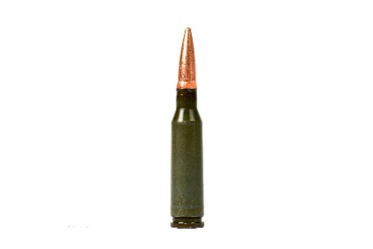

Geschichte zur AK74

Die Geschichte der AK74
Schauen wir uns die Geschichte an. Die AK-74 wurde offiziell 1974 eingeführt und sollte die AKM (Kaliber 7,62×39) in sowjetischen Streitkräften ablösen. Die Einführung des neuen Kalibers 5,45×39 mm folgte dem gleichen internationalen Trend wie bei westlichen Mächten hin zu kleineren, schnelleren Geschossen für das automatische Feuer. Die Waffe behielt den grundsätzlichen Kalaschnikowaufbau bei Gasdruckverschluss, Drehkopfverschluss, robuste Stanzblech-Receiver erhielt aber Änderungen wie ein anders gestaltetes Mündungsbrems- / Kompensatorprofil, das den Rückstoss und den Mündungsanstieg deutlich reduziert.
Technische Daten
Technische Eckdaten auf einen Blick und was sie bedeuten. Kaliber 5,45×39 mm, Lauflänge typischerweise etwa 415 Millimeter (ca. 16,3 Zoll) bei Standardvarianten, Magazin 30 Schuss (auch 45er RPK-Magazintypen oder 60er Kastenmagazine sind gebräuchlich), Gewicht ohne Magazin im Bereich von grob 3,0 bis 3,4 Kilogramm je nach Version. Die Feuerrate liegt um 600 bis 650 Schuss pro Minute im Dauerfeuer, wobei die praktische Schussfolge natürlich vom Bediener abhängt. Diese technischen Grössen machen die AK-74 zu einem handlichen, relativ leicht zu führenden Sturmgewehr für den Infanterieeinsatz.
Ballistik und Gefechtswirkung
Das 5,45×39-Geschoss ist leicht und schnell. Typische Mündungsgeschwindigkeiten liegen in der Praxis bei etwa 880 bis 900 Metern pro Sekunde mit Standardmilitärladungen, das ergibt ein flaches Flugverhalten und vergleichsweise niedrige Rückstossenergie, was das gerichtete Automatikfeuer stabiler macht. Gegenüber der 7,62×39 mm hat die 5,45-Patrone geringere Masse, liefert aber hohe Geschwindigkeit und eine geringere Rückstossbelastung des Schützen. In Kombination mit der AK-74-Mündungsbremse ergibt das ein kontrollierbareres Feuerbild bei Salven. Reichweite und Genauigkeit im Alltagsgebrauch. Offizielle und praktische Angaben nennen etwa 300 bis 500 Meter als effektive Reichweite für Einzelzielbekämpfung, je nach Zieltyp und Schütze lassen sich bei günstigen Bedingungen auch 500 Meter und mehr realistisch anpeilen. Die AK-74 ist nicht primär als Präzisionswaffe konzipiert, sondern als robustes Sturmgewehr; dennoch ist ihre Treffgenauigkeit auf mittlere Distanzen für typische Infanterieaufgaben absolut ausreichend.
Varianten und Evolution
Wie bei der AK-Familie üblich existieren zahlreiche Varianten: AKS-74 (mit Klappschaft), AK-74M (modernisierte Version mit Kunststoffschaft und verbesserten Oberflächen), exportorientierte Serien und zivile Ableger wie die Saiga Reihe, die viele konstruktive Merkmale übernimmt. In den letzten Jahrzehnten haben Modernisierungen Schienensysteme, verbesserte Bedienelemente und diverse Ergonomie-Anpassungen integriert, ohne das Basiskonzept aufzugeben.
Bedienung
Schauen wir uns die Bedienung und Pflege an. Die AK-74 folgt der Kalaschnikow-Tradition: simpel, robust, tolerant gegenüber Schmutz und schlechter Wartung. Das macht sie gerade unter rauen Feldbedingungen sehr zuverlässig. Gleichzeitig erlauben moderne Zubehöre Einbauten wie Optiken, Griffmodule oder Frontschienen, wodurch die Plattform in modernen Einsatzszenarien konkurrenzfähig bleibt. Wer die Waffe allerdings feinzoomen will auf Präzision wie bei Scharfschützengewehren, kommt an Austausch von Lauf, Visierung und Schaft nicht vorbei.
Fazit
Warum die AK-74 so verbreitet ist. Die Kombination aus bekannten Fertigungsprozessen, robustem Design, angepasster Ballistik und grosser Produktionszahl machte die AK-74 zu einem Standardgewehr vieler Streitkräfte und Milizen weltweit. Die Umstellung auf 5,45×39 entsprach einem bewussten taktischen Wechsel, und die weitgehende Kompatibilität mit AK-Familien-Herstellungstechniken erleichterte die Verbreitung.